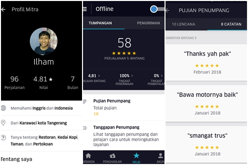

Setelah Kelulusan sekolah Tiba seorang Anak Bernama ilham Muttaqin Yang mungkin waktu itu belum memiliki kemampuan apa-apa (masih sama ampe sekarang kyk nya :v gamau sombong) akhirnya berstatus "MENGANGGUR".
sejak saat itulah gua mulai cari sampingan buat jajan, akhirnya gua memutuskan untuk menjadi driver ojol. Brand yang gua pilih adalah Uber sooooo buat gua Uber itu ga ribet ga kayak aturan Green Team karna jadi driver uber bukanlah sebuah pekerjaan melainkan sebatas sampingan
Tarif yg yang dikasih uber emang ga sebesar ijo ijo lumut (gua imut) wadawwww... tarif perjalanannya murah banget, terus banyak promosi telor ceplok (gratis),dan tempat Jemput penumpang yang jauhnya bikin kesel 7 keliling.
tapi biar begitu gua tetep nyaman sama uber (karna banyak cewe cakep )karnya Nyaman
1 bulan asik sama uber dan gua masih nganggur , 2 bulan masih nganggur juga , 3 bulan sama nganggur juga , brutal ternyata nganggur mengasikan :v.... akhirnya uber bukan sebatas nyari uang tapi mengisi waktu luang. dari masa masih sangat mengagumi pujaan hati sampai akhirnya nya tersakiti (kerad anjing gua berjuang nahan batin lu udah enak malah berpaling ke orang lain) akhirnya gua tenang , sabar , ikhlas (Fu*k off Motherfu*ker).
sampai akhirnya gua mulai memiliki kegiatan dan mulai sulit mendapat waktu luang. sekarang gua mulai jarang narik karna fokus dengan kegiatan yang gua lakuin sekarang. dan dengan resmi saham uber di asia tenggara akhirnya dicaplok oleh perusahaan ijo lumut dari negara jarjit shings. yang pada nanti nya tepat tanggal 8 April 2018 Uber resmi Diakusisi oleh Grab untuk wilayah Asia Tenggara dan akan menghilang selamanya. Terima Kasih uber yang telah menemaniku (saat ku galau eak) dalam senang ataupun susah. tanpa banyak mengucapkan janji tapi memberikan isentif yang lumayan tiap minggu nya :v dari pada ngomong janji banyakkkkk tapi akhir nya jadi anjing juga #uberON
Enak Dan GaEnak Nya
enak nya gua bisa pindah ke gojek kapan pun :v lumayan buat tambahan jajan buat kuliah nanti
Gaenak nya pasti bakal kangen yang namanya narik ga pake attribut :vnganter cewe kayak nganter pacar
Itu kesan kesan gua selama di uber kalo kurang sopan atau ngawur ya maap :v karna saya ilham muttaqin tidak peduli dengan anda yang tidak suka :v
buat uber 1 lagi tetap jadi sponsor Manchester united :v #GGMU